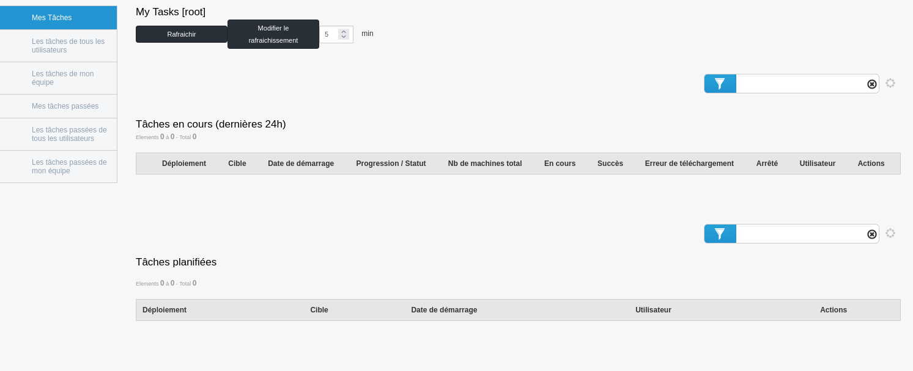
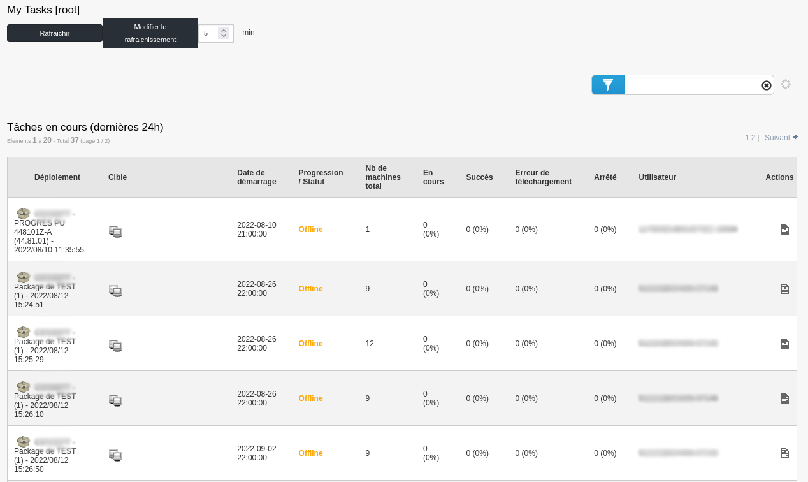
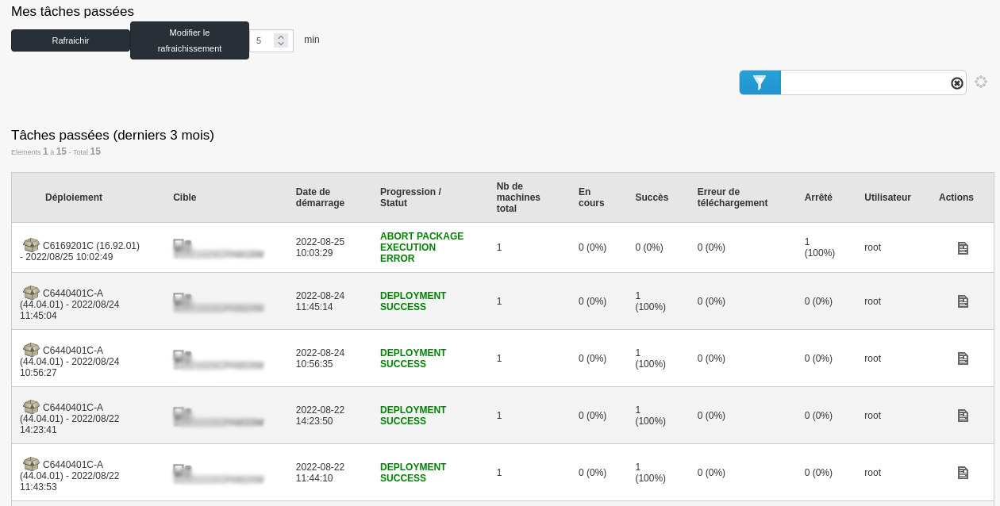
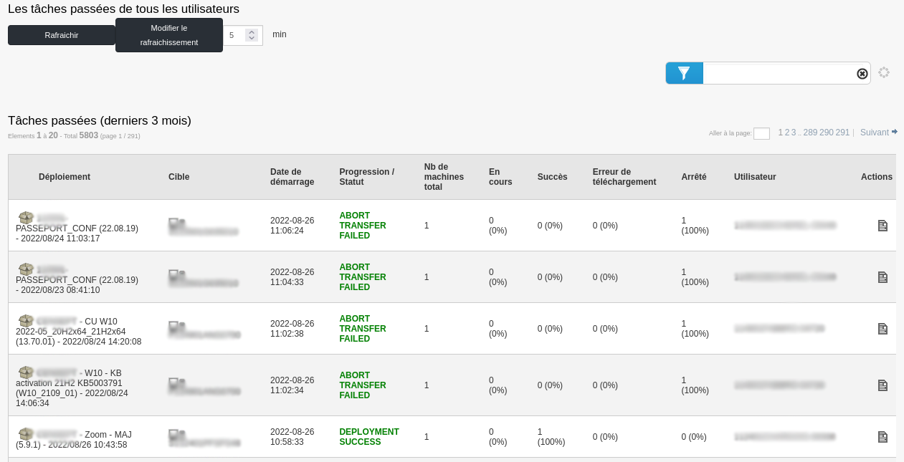
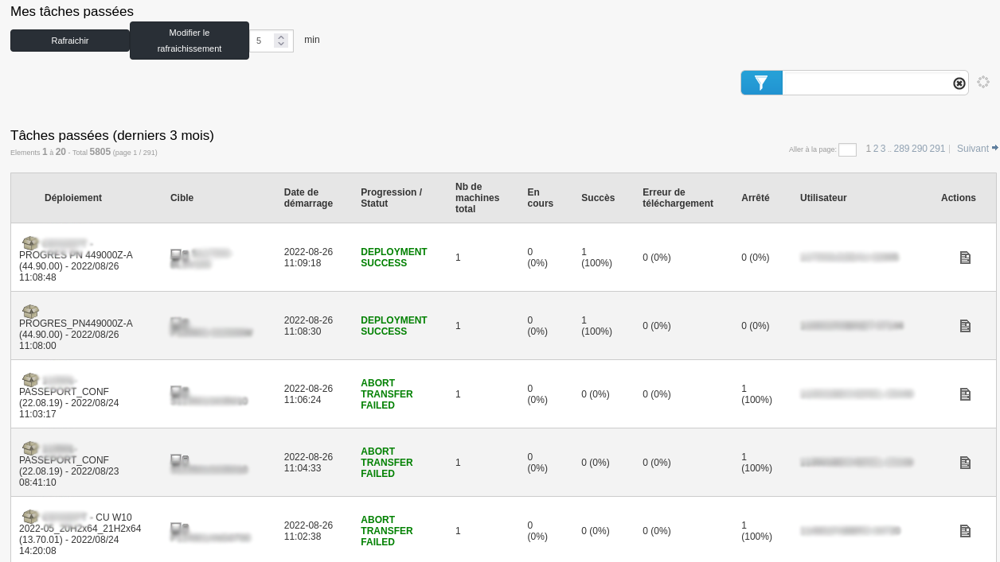
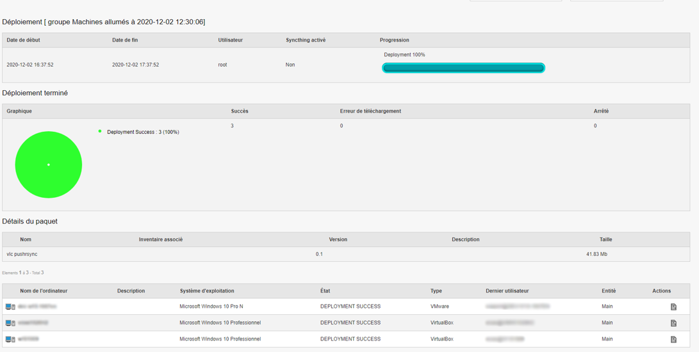
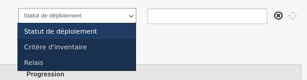

Audit¶
This section concerns the Audit part of the Medulla tool.
The audit menu gathers all deployment actions. When clicked, it leads to the « My tasks » page, which displays various ongoing deployments and scheduled tasks.

In the left menu, we find a submenu with:

Note that the display differs depending on the user profile. In this case, I am using an administrator profile.
At the top of the page, we can also set automatic page refresh.
Also, on each page, we can click on the « Deployment details » icon in the Actions of the deployment.
Tasks of all users¶
This page gathers tasks from all users using Medulla. Only tasks from the last 24 hours and ongoing are shown.

Tasks of my team¶
This page gathers tasks from users who are part of the connected user’s team. Only tasks from the last 24 hours and ongoing are shown.

My past tasks¶
This page gathers past tasks of the connected user, within the last 3 months.

Past tasks of all users¶
This page gathers tasks from all users using Medulla. The displayed tasks are those completed within the last 3 months.

Past tasks of my team¶
This page gathers tasks from users who are part of the connected user’s team. The displayed tasks are those completed within the last 3 months.

Deployment Group Audit Page¶
In the Audit menu, it’s possible to click on a deployment to see its details. For a group deployment, for example, we will find information presented differently.

In the first part of this page, we will have a view of the deployment progress, in our case at 100%. In the second part, a pie chart is present (similar to dashboard widgets). In the third part of the page, we will have the machines with information about the deployment status and the action log, as for a deployment per machine.
Filters¶
There are different ways to filter computers in the deployment audit. Firstly, the first way is to filter computers by Deployment Status, Inventory Criteria, or Relay. These three filters are located at the top right of the group deployment window, in the dropdown menu.
Deployment Status: Filters computers based on the deployment status. For example, we can search for computers with successful deployment using the « SUCCESS » filter. Inventory Criteria: Filters computers based on their inventory criteria. With this filter, we can, for example, filter based on the machine name. Relay: Filters computers based on the relay they are attached to.

Also, we can use the pie chart on the deployment page to create groups on which we can act.

If we click on the green part of the pie chart above, we will have a group of machines containing machines with successful deployment. This filter is very useful for correcting errors on stations. For example, if we have a group deployment with a 30% failure rate, then by clicking on the corresponding part of the pie chart, we will automatically create a group allowing us to check errors and potentially relaunch a deployment process after correcting the error.